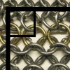

Ember Costumes
Tutorials and Resources
Chainmail Tutorial
1) Choose a metal
Galvanized Steel:
-pros: cheapest, very low rust (on cuts only), easy to find
-cons: heavy, dull
Stainless steel:
-pros: clean, bright, won't rust, strong
-cons: non-period, heavy, difficult to find except online, expensive,
Aluminum:
-pros: Easy to work with, bright, won't rust, light
-cons: moderately expensive, very dirty (tarnish), not armor grade (costume protection only), requires more repairs
Specialty metals:
Mild Steel: rusts easily, very period
Brass: unique look, great for trim, expensive, tarnishes
Rubber: great for jewelry, stretches
2) Choose a ring size/wire size
There are a number of combinations of wire size and ring sizes. These are the most common ones that most people will see:| Mandrel Size | 14 Gauge | 17 Gauge |
|---|---|---|
| 1/4" | not recommended | *Standard* |
| 5/16" | tight | open |
| 3/8" | *Standard* | not recommended |
Tractor Supply Company is a great place to find Galvanized and Aluminum wire, sold by the quarter mile as electric fence wire: Galv 14, Galv 17, Aluminum 14.
The Ring Lord is a great online source for pre-cut rings and other chainmail tools: Stainless
3) Spin coils
-Hand crank: cheaper, less waste, slower, safer-drill: faster, easier, louder, more wasteful, can be dangerous
4) Cut coils
-Knipex mini-bolt-cutters!!!! highly recommended
I prefer the comfort handle one's with a spring. They are a little expensive, but well worth the price.
Amazon
Home Depot
-diagonal cutters: adequate, might break on harder metals
-score and twist: slowest, clean cuts, great for hard metals
-dremel with cutting rig: flush cuts, dangerous, untested by me
5) Pre-close, prep
Before starting the mass weaving, it is convenient to close half of them all at once.Try to use non-marring pliers to bend the rings, otherwise teeth marks with scratch up the surface. Teeth on the pliers can be filed down slightly, but if removed completely, they will not be able to grip the rings, and you risk slipping and hurting yourself. My favorite pliers for weaving are a matched pair of small (4-5") no-spring, combination pliers. They have small flat jaws that works great for me to manipulate the rings consistently. Other people have more luck with needlenose, flat-nylon-jawed, or jewelry pliers.
Ring Closing Detail (Under Construction)
6) Knit swatches
At this point, all that's left to do is entertain yourself while you knit. I can watch TV, listen to podcasts, book, or lectures, or navigate on road trips while weaving. I recommend making a bunch of uniform squares of chainmail fabric (I make mine 16 x 8 closed rings) so that they will be managable and easily carried with you while working on them. The squares will be connected together later to make any size sheet or shape that you need.By working on it a small piece at a time, you avoid burnout of not noticing any progress as would happen if you added one ring at a time to a shirt. This part will get mindless and simple, but is very fulfilling.
 Weaving Swatches (Under Construction)
Weaving Swatches (Under Construction)
7) Advanced Topics
 Chainmail 90 Degree Seam
-Expansions and Contractions
Probably best explained by Butted Mail: A Mailmaker's Guide